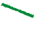

<link rel="import" href="../node_modules/@bower_components/polymer/polymer.html">
<link rel="import" href="../node_modules/@bower_components/paper-checkbox/paper-checkbox.html">
<link rel="import" href="../node_modules/@bower_components/paper-dropdown-menu/paper-dropdown-menu.html">
<link rel="import" href="../node_modules/@bower_components/paper-listbox/paper-listbox.html">
<link rel="import" href="../node_modules/@bower_components/paper-item/paper-item.html">
<link rel="stylesheet" href="https://fonts.googleapis.com/icon?family=Material+Icons">
<link rel="stylesheet" href="https://code.getmdl.io/1.3.0/material.amber-blue.min.css" />

<script defer src="https://code.getmdl.io/1.3.0/material.min.js"></script>
<script src="https://cdnjs.cloudflare.com/ajax/libs/Chart.js/2.4.0/Chart.bundle.min.js"></script>

<dom-module id="gan-lab">
  <style>
    #gan-lab-container {
      background-color: #f7f7f7;
      width: 100%;
    }

    #top-bar {
      align-items: center;
      background-color: #183D4E;
      display: flex;
      padding: 5px 30px 4px;
    }

    #tool-description {
      flex-grow: 2;
      color: #f7f7f7;
      font-size: 16px;
    }

    #top-panel {
      align-items: center;
      background-color: #eee;
      border-bottom: 2px solid #ddd;
      display: flex;
      font-size: 30px;
      padding: 10px 30px 9px;
    }

    .top-panel-item {
      margin-left: 30px;
      margin-right: 40px;
    }

    #page-title {
      color: #444;
      font-size: 36px;
      margin-left: 0;
      margin-right: 60px;
    }

    #distribution-selection .top-column-title {
      color: #222;
      font-size: 13px;
      text-transform: uppercase;
    }

    #distribution-image-list {
      display: flex;
      height: 30px;
    }
    
    .distribution-image {
      height: 30px;
      margin-right: 7px;
      width: 30px;
    }

    .distribution-image img,
    .distribution-image i {
      cursor: pointer;
      height: 30px;
      width: 30px;
    }

    .distribution-image i {
      color: rgb(233, 186, 33);
    }

    .distribution-item {
      border: 2px solid #ddd;
      opacity: 0.3;
    }

    .distribution-item:hover {
      border-color: #888;
      opacity: 0.5;
    }

    .distribution-item.selected {
      border-color: #888;
      opacity: 1.0;
    }

    #distribution-selection-checkbox paper-checkbox {
      font-size: 11px;
      --paper-checkbox-checked-color: #888;
      --paper-checkbox-label-color: #666;
      --paper-checkbox-label-spacing: 5px;
      --paper-checkbox-size: 11px;
      --paper-checkbox-unchecked-color: #888;
    }
    
    #timeline-controls {
      align-items: center;
      display: flex;
    }

    #timeline-controls button {
      margin-right: 11px;
    }

    .mdl-button--fab.mdl-button--colored,
    .mdl-button--fab.mdl-button--colored:hover,
    .mdl-button--fab.mdl-button--colored:active,
    .mdl-button--fab.mdl-button--colored:focus,
    .mdl-button--fab.mdl-button--colored:focus:not(:active) {
      background: #183D4E;
    }

    #play-pause-button .material-icons {
      color: white;
      font-size: 36px;
      transform: translate(-18px,-12px);
    }

    #play-pause-button .material-icons:nth-of-type(2) {
      display: none;
    }

    #play-pause-button.playing .material-icons:nth-of-type(1) {
      display: none;
    }

    #play-pause-button.playing .material-icons:nth-of-type(2) {
      display: inherit;
    }

    #step-buttons button {
      background-color: rgb(228, 228, 228);
      border: none;
      border-radius: 5px;
      cursor: pointer;
      display: block;
      margin-bottom: 1px;
      margin-left: 4px;
      padding: 3px 4px;
      text-align: center;
      text-decoration: none;
      width: 100px;
    }

    #step-buttons button:hover {
      background-color: rgb(248, 248, 248);
    }

    #next-step-g-button {
      color: rgb(163, 62, 189);
    }

    #next-step-d-button {
      color: rgb(68, 124, 228);
    }

    #iteration {
      flex-grow: 2;
      font-size: 14px;
      margin-left: 20px;
    }

    #iteration .top-column-title {
      color: #222;
      font-size: 13px;
    }

    #iteration-count {
      color: #666;
      font-size: 28px;
      margin: 5px 0 13px;
    }

    #save {
      display: none;
    }

    #main-panel {
      display: flex;
      font-size: 13px;
    }
    
    .panel-item {      
      padding: 15px 25px;
    }

    .panel-title {
      align-items: center;
      color: #555;
      display: flex;
      margin-bottom: 5px;
      font-size: 15px;
      height: 32px;
      text-transform: uppercase;
    }

    .panel-title .mdl-button--icon {
      margin-left: 6px;
    }

    #model-visualization-container {
      border: 1px solid rgba(0, 0, 0, 0.1);
      border-width: 0 1px 0 0;
      min-height: 600px;
      min-width: 800px;
    }

    #model-vis-content-container {
      position: relative;
    }

    #model-vis-svg,
    #model-vis-div {
      height: 600px;
      position: absolute;
      width: 800px;
    }

    #model-vis-svg {
      pointer-events: none;
    }

    #model-vis-svg path {
      fill: none;
      stroke: rgb(175, 175, 175);
      stroke-dasharray: 10,2;
      stroke-width: 2;
    }

    #model-vis-svg path.d-update-flow.d-activated {
      stroke: rgb(105, 158, 255);
      stroke-width: 4;
    }

    #model-vis-svg path.g-update-flow.g-activated {
      stroke: rgb(186, 99, 207);
      stroke-width: 4;
    }

    #model-vis-svg.playing path.d-activated,
    #model-vis-svg.playing path.g-activated {
      animation: dash 3600s linear forwards;
    }

    @keyframes dash {
      from {
        stroke-dashoffset: 36000px;
      }
      to {
        stroke-dashoffset: 0;
      }
    }

    .model-component {
      padding-top: 5px;
      position: absolute;
      text-align: center;
      width: 120px;
    }

    .model-component svg {
      background-color: #fff;
      border: 1px solid #eee;
      border-radius: 3px;
      height: 60px;
      width: 60px;
    }

    .model-component-model {
      width: 150px;
    }

    .model-component-model svg {
      border: 3px solid rgb(170, 170, 170);
      height: 150px;
      width: 150px;
    }

    .model-component-options {
      height: 30px;
      position: absolute;
      width: 100px;
    }

    .component-label {
      color: #000;
      font-size: 13px;
      line-height: 16px;
      position: relative;
    }

    .model-component-model .component-label {
      background-color: #f7f7f7;
    }

    .component-sub-label {
      color: rgb(146, 146, 146);
      font-size: 12px;
      line-height: 12px;
      margin-left: 30px;
      margin-top: -12px;
      position: relative;
      text-align: left;
    }

    .component-dropdown-label {
      color: rgb(121, 121, 121);
      font-size: 11px;
      text-align: left;
    }

    .component-loss-label {
      color: rgb(121, 121, 121);
      font-size: 12px;
      line-height: 12px;
      margin-top: 3px;
      text-align: left;
    }

    .component-tooltip {
      visibility: hidden;
    }

    .loss-bar {
      height: 12px;
      width: 0;
    }

    #d-loss-bar {
      background-color: rgb(105, 158, 255);
    }

    #g-loss-bar {
      background-color: rgb(186, 99, 207);
    }

    .config-item {
      background-color: #f7f7f7;
      line-height: 14px;
      margin: 0;
      padding: 0;
      width: 70px;
    }

    .config-item label {
      color: rgb(82, 82, 82);
      font-size: 11px;
      margin: 0;
    }

    .checkbox-toggle {
      right: 26px;
      position: absolute;
      top: -2px;
    }

    .model-component-model .checkbox-toggle {
      right: -8px;
      top: 1px;
    }

    .checkbox-toggle input {
      -webkit-appearance: none;
      appearance: none;
      background-color: rgb(216, 216, 216);
      border: none;
      border-radius: 10px;
      cursor: pointer;
      display: inline-block;
      height: 7px;
      outline: none;
      overflow: hidden;
      position: relative;
      transition: background-color ease 0.3s;
      width: 14px;
    }

    .checkbox-toggle input:before {
      background-color: #fff;
      border-radius: 50%;
      color: #fff;
      content: '';
      display: block;
      height: 5px;
      left: 1px;
      position: absolute;
      top: 1px;
      transition: all 0.3s;
      width: 5px;
      z-index: 2;
    }

    .checkbox-toggle input:checked {
      background-color: rgb(236, 236, 236);
    }

    .checkbox-toggle input:checked:before {
      background-color: rgb(128, 224, 99);
      left: 8px;
    }

    .up-down-buttons {
      display: inline-block;
      font-size: 6px;
      line-height: 6px;
      vertical-align: middle;
    }

    #model-vis-div .mdl-button--icon {
      height: 10px;
      min-height: 10px;
      min-width: 8px;
      width: 8px;
    }

    #model-vis-div .material-icons {
      font-size: 11px;
    }

    #model-vis-div paper-item {
      --paper-item: {
        font-size: 12px;
      };
      --paper-item-min-height: 12px;
    }

    #model-vis-div paper-dropdown-menu {
      --paper-input-container: {
        padding: 0;
      };
      --paper-input-container-color: rgb(207, 207, 207);
      --paper-input-container-input: {
        color: #666;
        font-size: 12px;
      };
    }

    #drawing-container {
      background: #fff;
      border-radius: 5px;
      display: none;
      padding: 10px;
      position: absolute;
    }

    #drawing-disable-background {
      background: rgba(0, 0, 0, 0.5);
      display: none;
      height: 100%;
      left: 0;
      position: absolute;
      top: 0;
      width: 100%;
    }

    #vis-descriptions text {
      fill: #737373;
      font-size: 12px;
    }

    .plot-bg {
      fill: #f3f3f3;
    }

    .plot-border {
      fill: none;
      stroke: #eee;
    }

    .true-dot {
      fill: rgba(0, 136, 55, 0.75);
    }

    .generated-dot, .noise-dot {
      fill: rgba(123, 50, 148, 0.75);
    }

    .uniform-generated-dot {
      fill: rgba(48, 48, 48, 0.5);
    }

    .manifold-cell {
      stroke: rgba(160, 160, 160, 0.25);
    }

    .gradient-generated {
      fill: rgba(196, 20, 219, 0.5);
      stroke-width: 0;
    }

    #svg-generator-gradients .gradient-generated {
      stroke: rgba(196, 20, 219, 0.5);
      stroke-width: 1;
    }

    .contour {
      fill: none;
      opacity: 0.5;
      stroke: #bbb;
      stroke-width: 0.5;
      stroke-linejoin: round;
    }

    #model-visualization-container.any-highlighted .model-component {
      opacity: 0.4;
    }

    #model-visualization-container.any-highlighted .model-component.model-component-model {
      opacity: 0.7;
    }

    #model-visualization-container.any-highlighted .model-component.model-component-model.deactivated {
      opacity: 0.4;
    }

    #model-visualization-container.any-highlighted .tooltip {
      opacity: 0.5;
    }

    #model-visualization-container.any-highlighted .model-component.highlighted,
    #model-visualization-container.any-highlighted .model-component.model-component-model.deactivated.highlighted,
    #model-visualization-container.any-highlighted .model-component.activated {
      opacity: 1.0;
    }

    .highlighted .component-label,
    .highlighted .component-sub-label,
    .highlighted .component-loss-label {
      color: #000;
      font-weight: bold;
    }

    #component-discriminator svg {
      border-color: rgba(105, 158, 255, 0.65);
    }

    #component-generator svg {
      border-color: rgba(186, 99, 207, 0.5);
    }

    #component-discriminator.highlighted svg {
      border-color: rgb(105, 158, 255);
    }

    #component-generator.highlighted svg {
      border-color: rgb(186, 99, 207);
    }

    #component-discriminator.deactivated svg,
    #component-generator.deactivated svg {
      border-color: rgb(179, 179, 179);
    }

    #tooltips {
      display: none;
    }

    .tooltip-number {
      font-size: 24px;
      height: 10px;
      left: 5px;
      padding: 3px;
      position: absolute;
      text-align: center;
      top: 10px;
    }

    .tooltip {
      color: white;
      font-size: 12px;
      line-height: 13px;
      padding: 7px 6px 7px 29px;
      position: absolute;
      width: 125px;
    }

    .tooltip-for-d {
      background-color: rgb(64, 128, 247)
    }

    .tooltip-for-g {
      background-color: rgb(170, 79, 192);
    }

    #tooltips.shown {
      display: block;
      z-index: 99995;
    }

    .tooltip.highlighted {
      z-index: 99999;
    }

    #model-visualization-container.any-highlighted .tooltip-for-d.highlighted,
    #model-visualization-container.any-highlighted .tooltip-for-g.highlighted {
      opacity: 1.0;
    }

    #visualization-container {
      min-height: 660px;
      min-width: 400px;
    }

    #vis-content-container {
      position: relative;
    }

    #vis-svg, 
    #vis-descriptions, 
    #drawing-container {
      position: absolute;
    }

    #vis-descriptions {
      top: 400px;
    }

    #drawing-container {
      cursor: pointer;
    }

    #charts-panel {
      border: 1px solid rgba(0, 0, 0, 0.1);
      border-width: 0 0 0 1px;
      width: 200px;
    }    
  </style>
  <template>
    <div id="gan-lab-container">
      <div id="top-bar">
        <div id="tool-description">
          Play with Generated Adversarial Networks (GANs) in your browser!
        </div>
        <div id="source-link">
          <a href="https://github.com/poloclub/ganlab" title="Source on GitHub">
            
          </a>
        </div>
      </div>
      
      <div id="top-panel">
        <div id="page-title" class="top-panel-item"><strong>GAN</strong> Lab</div>

        <div id="distribution-selection" class="top-panel-item">
          <div class="top-column-title">Data distribution</div>
          <div id="distribution-image-list">
            <div class="distribution-image">
              
            </div>
            <div class="distribution-image">
              
            </div>
            <div class="distribution-image">
              
            </div>
            <div class="distribution-image">
              
            </div>
            <div class="distribution-image">
              <i class="distribution-item material-icons" 
                data-distribution-name="drawing"
                title="Draw one by yourself">brush</i>
            </div>
          </div>
          <div id="distribution-selection-checkbox">
            <paper-checkbox id="toggle-pretrained" 
              title="Train on top of a pre-trained model or train from scratch"
              checked>
              Use pre-trained model
            </paper-checkbox>
          </div>
        </div>

        <div id="timeline-controls" class="top-panel-item">
          <button 
            class="mdl-button mdl-js-button mdl-button--icon ui-resetButton"
            id="reset-button" title="Reset the model">
            <i class="material-icons">replay</i>
          </button>
          <button class="mdl-button mdl-js-button mdl-button--fab 
            mdl-button--colored ui-playButton"
            id="play-pause-button" title="Run/Pause training">
            <i class="material-icons">play_arrow</i>
            <i class="material-icons">pause</i>
          </button>
          <button class="mdl-button mdl-js-button mdl-button--icon"
            id="slow-step" title="Slow-motion mode" 
            style="margin-left: 5px">
            <i class="material-icons">slow_motion_video</i>
          </button>
          <button 
            class="mdl-button mdl-js-button mdl-button--icon ui-stepButton"
            id="next-step-button" title="Train for one epoch" 
            style="margin-left: 5px">
            <i class="material-icons">skip_next</i>
          </button>

          <div id="step-buttons" style="display: none">
            <button id="next-step-g-button" 
              title="Train only generator for one epoch">
              Generator
            </button>
            <button id="next-step-d-button" 
              title="Train only discriminator for one epoch">
              Discriminator
            </button>
            <button id="next-step-all-button" 
              title="Train both discriminator and generator for one epoch">
              Both
            </button>
          </div>
        </div>

        <div id="iteration" class="top-panel-item">
          <div class="top-column-title">Epoch</div>
          <div id="iteration-count">0</div>
        </div>

        <div id="save" class="top-panel-item">
          <button class="mdl-button mdl-js-button mdl-button--icon"
            id="save-model" title="Save model" style="margin-left: 5px">
            <i class="material-icons">save_alt</i>
          </button>
        </div>
      </div>

      <div id="main-panel">
        <div id="model-visualization-container" class="panel-item">
          <div class="panel-title" style="padding-left: 5px;"
            title="Shows the architecture of a model and data flow">
            Model Overview Graph
            <button class="mdl-button mdl-js-button mdl-button--icon"
              id="edit-model-button" title="Show/hide hyperparameters">
              <i class="material-icons">mode_edit</i>
            </button>
          </div>

          <div id="model-vis-content-container">
            <svg id="model-vis-svg" class="">
              <path d="M86,285 L122,285"
                id="arrow-g-forward-i" class="d-update-flow g-update-flow" />
              <path d="M278,285 L314,285"
                id="arrow-g-forward-o" class="d-update-flow g-update-flow" />
              <path d="M376,195 L412,195"
                id="arrow-t-d-forward-i" class="d-update-flow" />
              <path d="M568,195 L604,195"
                id="arrow-t-d-forward-o" class="d-update-flow" />
              <path d="M376,285 L412,285"
                id="arrow-g-d-forward-i" class="d-update-flow g-update-flow" />
              <path d="M568,285 L604,285"
                id="arrow-g-d-forward-o" class="d-update-flow g-update-flow" />

              <path d="M665,195 C685,195 675,240 700,240"
                id="arrow-t-prediction-d-loss" class="d-update-flow" />
              <path d="M665,285 C685,285 675,240 700,240"
                id="arrow-g-prediction-d-loss" class="d-update-flow" />
              <path d="M700,240 L710,240 a10,10 0 0 0 10,-10
                L720,60 a10,10 0 0 0 -10,-10
                L500,50 a10,10 0 0 0 -10,10 L490,161"
                id="arrow-d-loss-d" class="d-update-flow" />

              <path d="M665,285 L710,285 a10,10 0 0 1 10,10
                L720,445 a10,10 0 0 1 -10,10 L376,455"
                id="arrow-g-loss-g-1" class="g-update-flow" />
              <path d="M314,455 L210,455 a10,10 0 0 1 -10,-10 L200,333"
                id="arrow-g-loss-g-2" class="g-update-flow" />
            </svg>

            <div id="model-vis-div">
              <div id="component-d-loss" class="model-component"
                style="top: 180px; left: 727px">
                <div id="d-loss-bar" class="loss-bar" title=""></div>
                <div class="component-loss-label">Discriminator<br />loss</div>
                <div class="component-tooltip">
                  <span id="d-loss-value" title="loss"></span>
                </div>
              </div>

              <div id="component-g-loss" class="model-component"
                style="top: 295px; left: 727px">
                <div id="g-loss-bar" class="loss-bar" title=""></div>
                <div class="component-loss-label">Generator<br />loss</div>
                <div class="component-tooltip">
                  <span id="g-loss-value" title="loss"></span>
                </div>
              </div>

              <div id="component-options-loss" class="model-component"
              style="top: 240px; left: 727px">
                <div class="config-item">
                  <paper-dropdown-menu no-animations no-label-float>
                    <paper-listbox attr-for-selected="value"
                      id="loss-type-dropdown" class="dropdown-content"
                      selected="{{lossType}}">
                      <template is="dom-repeat" items="[[lossTypeOptions]]">
                        <paper-item value="[[item]]" label="[[item]]">
                          [[item]]
                        </paper-item>
                      </template>
                    </paper-listbox>
                  </paper-dropdown-menu>
                </div>
              </div>

              <div id="component-d-loop" class="model-component"
                style="top: 24px; left: 590px">
                <div class="config-item" style="width: 150px">
                  <div class="up-down-buttons">
                    <button class="mdl-button mdl-js-button mdl-button--icon"
                      id="k-d-steps-add-button" 
                      title="Increase a step per epoch">
                      <i class="material-icons">keyboard_arrow_up</i>
                    </button>
                    <br />
                    <button class="mdl-button mdl-js-button mdl-button--icon"
                      id="k-d-steps-remove-button" 
                      title="Decrease a step per iter">
                      <i class="material-icons">keyboard_arrow_down</i>
                    </button>
                  </div>
                  <div class="up-down-buttons">
                    <label>
                      <span id="k-d-steps">2</span> update(s) per epoch</label>
                  </div>
                </div>
              </div>

              <div id="component-g-loop" class="model-component"
                style="top: 452px; left: 590px">
                <div class="config-item" style="width: 150px">
                  <div class="up-down-buttons">
                    <button class="mdl-button mdl-js-button mdl-button--icon"
                      id="k-g-steps-add-button" 
                      title="Increase a step per epoch">
                      <i class="material-icons">keyboard_arrow_up</i>
                    </button>
                    <br />
                    <button class="mdl-button mdl-js-button mdl-button--icon"
                      id="k-g-steps-remove-button" 
                      title="Decrease a step per epoch">
                      <i class="material-icons">keyboard_arrow_down</i>
                    </button>
                  </div>
                  <div class="up-down-buttons">
                    <label>
                      <span id="k-g-steps">1</span> update(s) per epoch</label>
                  </div>
                </div>
              </div>

              <div id="component-discriminator-learning" 
                class="model-component"
                style="top: 75px; left: 495px">
                <div class="config-item" style="width: 120px">
                  <div class="up-down-buttons">
                    <label>Optimizer:</label>
                  </div>
                  <div class="up-down-buttons" style="width: 65px">
                    <paper-dropdown-menu no-animations no-label-float>
                      <paper-listbox attr-for-selected="value"
                        id="d-optimizer-type-dropdown" class="dropdown-content"
                        selected="{{dOptimizerType}}">
                        <template is="dom-repeat" 
                          items="[[optimizerTypeOptions]]">
                          <paper-item value="[[item]]" label="[[item]]">
                            [[item]]
                          </paper-item>
                        </template>
                      </paper-listbox>
                    </paper-dropdown-menu>
                  </div>
                </div>
                <div class="config-item" style="width: 120px">
                  <div class="up-down-buttons">
                    <label>Learning rate:</label>
                  </div>
                  <div class="up-down-buttons" style="width: 48px">
                    <paper-dropdown-menu no-animations no-label-float>
                      <paper-listbox attr-for-selected="value"
                        id="d-learning-rate-dropdown" class="dropdown-content"
                        selected="{{dLearningRate}}">
                        <template is="dom-repeat" 
                          items="[[learningRateOptions]]">
                          <paper-item value="[[item]]" label="[[item]]">
                            [[item]]
                          </paper-item>
                        </template>
                      </paper-listbox>
                    </paper-dropdown-menu>
                  </div>
                </div>
              </div>

              <div id="component-generator-learning" class="model-component"
                style="top: 365px; left: 205px">
                <div class="config-item" style="width: 120px">
                  <div class="up-down-buttons">
                    <label>Optimizer:</label>
                  </div>
                  <div class="up-down-buttons" style="width: 65px">
                    <paper-dropdown-menu no-animations no-label-float>
                      <paper-listbox attr-for-selected="value"
                        id="g-optimizer-type-dropdown" class="dropdown-content"
                        selected="{{gOptimizerType}}">
                        <template is="dom-repeat" 
                          items="[[optimizerTypeOptions]]">
                          <paper-item value="[[item]]" label="[[item]]">
                            [[item]]
                          </paper-item>
                        </template>
                      </paper-listbox>
                    </paper-dropdown-menu>
                  </div>
                </div>
                <div class="config-item" style="width: 120px">
                  <div class="up-down-buttons">
                    <label>Learning rate:</label>
                  </div>
                  <div class="up-down-buttons" style="width: 48px">
                    <paper-dropdown-menu no-animations no-label-float>
                      <paper-listbox attr-for-selected="value"
                        id="g-learning-rate-dropdown" class="dropdown-content"
                        selected="{{gLearningRate}}">
                        <template is="dom-repeat" 
                          items="[[learningRateOptions]]">
                          <paper-item value="[[item]]" label="[[item]]">
                            [[item]]
                          </paper-item>
                        </template>
                      </paper-listbox>
                    </paper-dropdown-menu>
                  </div>
                </div>
              </div>

              <div id="component-true-prediction" class="model-component"
                style="top: 156px; left: 575px">
                <div class="component-sub-label">Real</div>
                <svg id="svg-true-prediction"></svg>
              </div>

              <div id="component-generated-prediction" class="model-component"
                style="top: 250px; left: 575px">
                <div class="component-sub-label">Fake</div>
                <svg id="svg-generated-prediction"></svg>
                <div class="component-label">Prediction of<br />Samples</div>
              </div>

              <div id="component-discriminator"
                class="model-component model-component-model"
                style="top: 156px; left: 412px">
                <svg id="svg-discriminator-output"></svg>
                <div class="component-label">Discriminator
                  <div id="overlap-toggle" class="checkbox-toggle">
                    <input type="checkbox" id="overlap-plots" checked
                      title="show/hide discriminator's prediction" />
                  </div>
                </div>
              </div>

              <div id="component-options-discriminator" 
                class="model-component-options"
                style="top: 337px; left: 410px">
                <div class="config-item" style="width: 175px">
                  <div class="up-down-buttons">
                    <button class="mdl-button mdl-js-button mdl-button--icon"
                      id="d-layers-add-button" title="Add a layer">
                      <i class="material-icons">keyboard_arrow_up</i>
                    </button>
                    <br />
                    <button class="mdl-button mdl-js-button mdl-button--icon"
                      id="d-layers-remove-button" title="Remove a layer">
                      <i class="material-icons">keyboard_arrow_down</i>
                    </button>
                  </div>
                  <div class="up-down-buttons">
                    <label>
                      <span id="num-d-layers">1</span> hidden layer(s)</label>
                  </div>
                  <div class="up-down-buttons">
                    <button class="mdl-button mdl-js-button mdl-button--icon"
                      id="d-neurons-add-button" 
                      title="Add a neuron for each layer">
                      <i class="material-icons">keyboard_arrow_up</i>
                    </button>
                    <br />
                    <button class="mdl-button mdl-js-button mdl-button--icon"
                      id="d-neurons-remove-button" 
                      title="Remove a neuron for each layer">
                      <i class="material-icons">keyboard_arrow_down</i>
                    </button>
                  </div>
                  <div class="up-down-buttons">
                    <label><span id="num-d-neurons">8</span> neuron(s)</label>
                  </div>
                </div>
              </div>

              <div id="component-generator"
                class="model-component model-component-model"
                style="top: 156px; left: 122px">
                  <svg id="svg-generator-manifold"></svg>
                  <div class="component-label">Generator
                    <div id="manifold-toggle" class="checkbox-toggle"
                      title="show/hide generator's manifold">
                      <input type="checkbox" id="enable-manifold" />
                    </div>
                  </div>
                </div>

              <div id="component-options-generator" 
                class="model-component-options"
                style="top: 337px; left: 120px">
                <div class="config-item" style="width: 175px">
                  <div class="up-down-buttons">
                    <button class="mdl-button mdl-js-button mdl-button--icon"
                      id="g-layers-add-button" title="Add a layer">
                      <i class="material-icons">keyboard_arrow_up</i>
                    </button>
                    <br />
                    <button class="mdl-button mdl-js-button mdl-button--icon"
                      id="g-layers-remove-button" title="Remove a layer">
                      <i class="material-icons">keyboard_arrow_down</i>
                    </button>
                  </div>
                  <div class="up-down-buttons">
                    <label>
                      <span id="num-g-layers">1</span> hidden layer(s)</label>
                  </div>
                  <div class="up-down-buttons">
                    <button class="mdl-button mdl-js-button mdl-button--icon"
                      id="g-neurons-add-button" 
                      title="Add a neuron for each layer">
                      <i class="material-icons">keyboard_arrow_up</i>
                    </button>
                    <br />
                    <button class="mdl-button mdl-js-button mdl-button--icon"
                      id="g-neurons-remove-button" 
                      title="Remove a neuron for each layer">
                      <i class="material-icons">keyboard_arrow_down</i>
                    </button>
                  </div>
                  <div class="up-down-buttons">
                    <label><span id="num-g-neurons">8</span> neuron(s)</label>
                  </div>
                </div>
              </div>

              <div id="component-discriminator-gradients" 
                class="model-component"
                style="top: 27px; left: 470px">
                <div class="component-label">Gradients</div>
              </div>

              <div id="component-generator-gradients" class="model-component"
                style="top: 420px; left: 285px">
                <svg id="svg-generator-gradients"></svg>
                <div class="component-label">Gradients
                  <div id="g-gradients-toggle" class="checkbox-toggle"
                    title="show/hide gradients for generator"
                    style="right: 11px; top: 1px">
                    <input type="checkbox" id="show-g-gradients" checked />
                  </div>
                </div>
              </div>

              <div id="component-true-distribution" class="model-component"
                style="top: 125px; left: 315px; width: 65px;">
                <div>
                  <div id="t-contour-toggle" class="checkbox-toggle"
                    title="show/hide true distribution's contour"
                    style="right: 1px; top: 6px">
                    <input type="checkbox" id="show-t-contour" />
                  </div>
                </div>
              </div>

              <div id="component-true-samples" class="model-component"
                style="top: 156px; left: 285px">
                <div class="component-sub-label">Real
                  <div id="t-samples-toggle" class="checkbox-toggle"
                    title="show/hide true samples">
                    <input type="checkbox" id="show-t-samples" checked />
                  </div>
                </div>
                <svg id="svg-true-samples"></svg>
              </div>

              <div id="component-generated-samples" class="model-component"
                style="top: 250px; left: 285px">
                <div class="component-sub-label">Fake
                  <div id="g-samples-toggle" class="checkbox-toggle"
                    title="show/hide generated samples">
                    <input type="checkbox" id="show-g-samples" checked />
                  </div>
                </div>
                <svg id="svg-generated-samples"></svg>
                <div class="component-label">Samples</div>
              </div>

              <div id="component-noise" class="model-component"
                style="top: 250px; left: -5px">
                <svg id="svg-noise"></svg>
                <div class="component-label">Noise</div>
              </div>

              <div id="component-options-noise" class="model-component-options"
                style="top: 333px; left: 15px">
                <div class="config-item" style="width: 80px">
                  <paper-dropdown-menu no-animations no-label-float>
                    <paper-listbox attr-for-selected="value" 
                      id="noise-dropdown" class="dropdown-content" 
                      selected="{{selectedNoiseType}}">
                      <template is="dom-repeat" items="[[noiseTypes]]">
                        <paper-item value="[[item]]" label="[[item]]">
                          [[item]]
                        </paper-item>
                      </template>
                    </paper-listbox>
                  </paper-dropdown-menu>
                </div>
              </div>
            </div>

            <div id="tooltips">
              <div id="tooltip-d-generated-samples" 
                class="tooltip tooltip-for-d"
                style="top: -10px; left: 0px">
                <div class="tooltip-number">1</div>
                Generator derives samples from noise
              </div>
              <div id="tooltip-d-prediction" class="tooltip tooltip-for-d"
                style="top: -10px; left: 160px">
                <div class="tooltip-number">2</div>
                Discriminator classifies samples
              </div>
              <div id="tooltip-d-loss" class="tooltip tooltip-for-d"
                style="top: -10px; left: 320px">
                <div class="tooltip-number">3</div>
                Computes discriminator loss
              </div>
              <div id="tooltip-d-gradients" class="tooltip tooltip-for-d"
                style="top: -10px; left: 480px">
                <div class="tooltip-number">4</div>
                Computes discriminator gradients
              </div>
              <div id="tooltip-update-discriminator" 
                class="tooltip tooltip-for-d"
                style="top: -10px; left: 640px">
                <div class="tooltip-number">5</div>
                Updates discriminator based on gradients
              </div>
              <div id="tooltip-g-generated-samples" 
                class="tooltip tooltip-for-g"
                style="top: 510px; left: 0px">
                <div class="tooltip-number">1</div>
                Generator derives samples from noise
              </div>
              <div id="tooltip-g-prediction" class="tooltip tooltip-for-g"
                style="top: 510px; left: 160px">
                <div class="tooltip-number">2</div>
                Discriminator classifies fake samples only
              </div>
              <div id="tooltip-g-loss" class="tooltip tooltip-for-g"
                style="top: 510px; left: 320px">
                <div class="tooltip-number">3</div>
                Computes generator loss
              </div>
              <div id="tooltip-g-gradients" class="tooltip tooltip-for-g"
                style="top: 510px; left: 480px">
                <div class="tooltip-number">4</div>
                Computes generator gradients
              </div>
              <div id="tooltip-update-generator" class="tooltip tooltip-for-g"
                style="top: 510px; left: 640px">
                <div class="tooltip-number">5</div>
                Updates generator based on gradients
              </div>
            </div>
          </div>
        </div>

        <div id="drawing-disable-background"></div>

        <div id="visualization-container" class="panel-item">
          <div class="panel-title"
            title="Visualizes components in the model overview graph as 
multiple layers. The six layers can be turned on or off using 
green toggle switches on the left.">
            Layered Distributions
          </div>

          <div id="vis-content-container">
            <svg id="vis-svg" width="400" height="400">
              <g id="vis-area">
                <g id="vis-discriminator-output" class="vis-panel">
                  <rect class="plot-bg" 
                    width="400" height="400" x="0" y="0"></rect>
                </g>
                <g id="vis-samples" class="vis-panel">
                  <g id="vis-true-samples-contour" class="contour" 
                    style="visibility: hidden"></g>
                  <g id="vis-true-samples"></g>
                  <g id="vis-generator-gradients"></g>
                  <g id="vis-generated-samples"></g>
                  <g id="vis-manifold" style="visibility: hidden"></g>
                  <rect class="plot-border" 
                    width="400" height="400" x="0" y="0"></rect>
                </g>
              </g>
            </svg>
            <svg id="vis-descriptions" width="400" height="220">
              <g transform="translate(5,20)">
                <text transform="translate(0,0)">
                  Each dot is a 2D data sample:
                </text>
                <circle class="true-dot" 
                  r="2" transform="translate(5,15)"></circle>
                <text transform="translate(15,19)">Real samples</text>
                <circle class="generated-dot" 
                  r="2" transform="translate(5,34)"></circle>
                <text transform="translate(15,38)">Fake samples</text>
              </g>
              <g transform="translate(5,80)">
                <text transform="translate(0,10)">
                  Background colors of grid cells represent 
                  discriminator's predictions:
                </text>
                <rect class="true-dot" width="10" height="10" 
                  transform="translate(1,20)"
                  style="fill-opacity: 0.75"></rect>
                <text transform="translate(16,29)">
                  Samples in this cell seem real.
                </text>
                <rect width="10" height="10" transform="translate(1,39)"
                style="fill: #e2e2e2"></rect>
                <text transform="translate(16,48)">
                  Difficult to determine whether samples are real or fake.
                </text>
                <rect class="generated-dot" width="10" height="10" 
                  transform="translate(1,58)"
                  style="fill-opacity: 0.75"></rect>
                <text transform="translate(16,67)">
                  Samples in this cell seem fake.
                </text>
              </g>
              <g transform="translate(5,180)">
                <text transform="translate(0,0)">
                  Lines from fake samples represent gradients for generator:
                </text>
                <circle class="generated-dot" 
                  r="2" transform="translate(3,18)"></circle>
                <text transform="translate(15,19)">
                  This sample needs to move upper right 
                  to decrease generator's loss.
                </text>
                <polygon class="gradient-generated" transform="translate(3,18)"
                  points="0,0 1,1 10,-10 -1,-1"></polygon>
              </g>
            </svg>

            <div id="drawing-container">
              <canvas id="input-drawing-canvas" 
                width="400" height="400"></canvas>
              <div id="drawing-instruction">
                Draw a distribution above, then click the apply button.
              </div>
              <button id="finish-drawing" 
                class="mdl-button mdl-js-button mdl-button--raised">
                Apply
              </button>
            </div>
          </div>
        </div>

        <div id="charts-panel" class="panel-item">
          <div class="panel-title">Metrics</div>

          <div id="chart-container">
            <canvas id="cost-chart" width="200" height="200"></canvas>
            <canvas id="eval-chart" width="200" height="200"></canvas>
          </div>
        </div>
      </div>
    </div>
  </template>
</dom-module>
